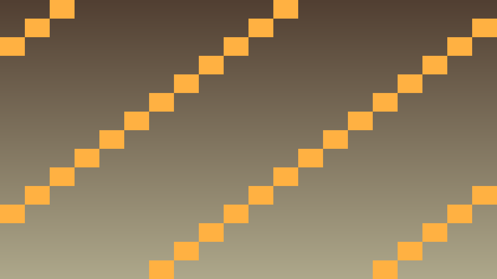

4.5 Šaušanas gameplay mehānika un object pooling (objektu atkārtota izmantošana)
Stundas uzdevums: Implementēt efektīvu lādiņu sistēmu ar object pooling tehniku.
Teorija: dinamiska objektu dzīves cikla pārvaldība un Object Pooling
Atkārtotas izveides (Instantiate) un dzēšanas (QueueFree) izmaksas
Kad programmā pēc lietotāja darbības uz īsu brīdi jāparāda jauns objekts no sagatavotas .tscn veidnes (PackedScene), vienkāršākā pieeja ir to katrā reizē izveidot ar Instantiate<T>(), pievienot scēnas kokam un pēc noteikta darbības laika izdzēst ar QueueFree() (lai darbība nenotiktu katrā kadrā pēc kārtas, ievieš arī cooldown laika atskaiti, ko ik kadrā samazina par delta).
Ja šādi īslaicīgi objekti rodas un izzūd retumis, veiktspēja necieš. Taču, ja vienlaikus vai īsā laikā tiek radīti un iznīcināti simtiem eksemplāru, nepārtraukta atmiņas piešķiršana, mezglu pārkārtošana scēnas kokā un C# automātiskā atkritumu savācēja (Garbage Collector) darbība rada mikroaiztures un pazemina kadru skaitu sekundē (FPS):
// 1. Jauna eksemplāra izveide ar intervāla ierobežojumu (cooldown):
[Export] public PackedScene Veidne { get; set; }
private double gaidisana = 0.0;
public override void _PhysicsProcess(double delta)
{
gaidisana -= delta;
if (Input.IsActionPressed("aktivizet") && gaidisana <= 0.0)
{
Vienums v = Veidne.Instantiate<Vienums>();
GetParent().AddChild(v); // Katrā reizē pievieno jaunu mezglu
v.GlobalPosition = GlobalPosition;
gaidisana = 0.2;
}
}
// 2. Paša Vienums mezgla skriptā — dzēšana pēc darbības laika beigām:
dzivesLaiks -= (float)delta;
if (dzivesLaiks <= 0.0f) QueueFree(); // Atbrīvo mezglu (noslogo GC)Objektu krātuve (Object Pooling) un atkārtota izmantošana
Objektu atkārtota izmantošana jeb krātuve (Object Pooling) aizstāj nepārtrauktu objektu radīšanu un dzēšanu ar fiksēta izmēra rezervi — līdzīgi kā ēdnīcā pusdienu laikā mazgā un lieto vienus un tos pašus 50 šķīvjus, nevis katram apmeklētājam izgatavo jaunu šķīvi un pēc maltītes to izmet. Krātuves darbība balstās uz trim posmiem:
public class VienumuKratuve
{
private readonly List<Vienums> kratuve = new();
private const int Izmers = 50;
public void Sagatavot(Node vecaks, PackedScene veidne)
{
for (int i = 0; i < Izmers; i++)
{
Vienums v = veidne.Instantiate<Vienums>();
vecaks.AddChild(v);
Atgriezt(v);
kratuve.Add(v);
}
}
public Vienums SanemtBrivo()
{
foreach (Vienums v in kratuve)
{
if (!v.IrAktivs)
{
v.IestatitAktivu(true);
v.Visible = true;
return v;
}
}
return null; // Visi eksemplāri pašlaik aizņemti.
}
public void Atgriezt(Vienums v)
{
v.IestatitAktivu(false);
v.Visible = false;
}
}Sākumā visi rezerves mezgli vienreiz tiek izveidoti, pievienoti scēnai un paslēpti (Visible = false, atslēdzot fizikas apstrādi ar SetPhysicsProcess(false)). Kad objekts kļūst vajadzīgs, paņem pirmo neaktīvo eksemplāru (izsaucējam vienmēr jāpārbauda, vai metode nav atgriezusi null, ja krātuve pilnībā aizņemta), bet darbības beigās to atkal paslēpj — tādējādi mezglu skaits scēnas kokā paliek nemainīgs.
Kā šo izmantot projektā
Atceries: ar redzamu efektu redaktorā nepietiek. Paskaidro, kura C# class (klase) glabā stāvokli, kura method (metode) to maina un kā Godot node (mezgls) struktūra izmanto šo kodu.
Pārbaudi: C# kodā pamatoti izvēlēti List (saraksts), Dictionary (vārdnīca) vai HashSet (jaucējkopa), AI (mākslīgais intelekts) stāvokļi ir skaidri, un sarežģītākas sistēmas var profilēt vai atkļūdot.
public class AiDataCheckpoint
{
public string Lesson = "4.5 Šaušanas mehānika un object pooling";
public bool UsesCSharp = true;
public bool ChoosesContainer = true;
public bool SeparatesAiState = true;
public bool HandlesRemovalSafely = true;
}Praktiskie uzdevumi
1. uzdevums -
Izšauj pirmo lādiņu
Kur strādāt: Izveido bullet.tscn projekta saknē un piesaisti tās Area2D saknei Scripts/Bullet.cs; tajā raksti kustību un dzīves ilgumu. Esošajā Scripts/Player.cs pievieno BulletScene lauku un šaušanas kodu; darbību shoot izveido Input Map.
Beigās spēlētājs varēs šaut ar peles klikšķi.
- Izveido scēnu
bullet.tscnarArea2D(2D saskares zona) sakni un sadursmes formu. - Izveido C# class
Bullet, kas kustas taisni ardelta. - Pievieno tai laiku, pēc kura lādiņš izdzēšas ar
QueueFree();. - Izveido Input Map darbību
shootar peles kreiso pogu. - Ielādē spēlētāja class scēnu ar
[Export] public PackedScene BulletScene { get; set; }vaiGD.Load<PackedScene>("res://bullet.tscn"). - Izveido jaunu lādiņu ar
Bullet bullet = BulletScene.Instantiate<Bullet>();un pievieno to scēnai. - Būvē un izšauj dažus lādiņus.
Gatavs, kad: ar katru peles klikšķi parādās lādiņš, kas lido prom un pēc laika pazūd.
2. uzdevums -
Izveido object pool
Kur strādāt: Izveido Scripts/BulletPool.cs parastajai C# klasei. Esošajā Scripts/Player.cs izveido un lieto krātuvi; Scripts/Bullet.cs papildini ar aktīvo stāvokli un atgriešanu krātuvē laika beigās.
Beigās lādiņi tiks izmantoti atkārtoti, nevis veidoti no jauna.
- Izveido class
BulletPoolar laukuprivate readonly List<Bullet> pool = new();. - Uzraksti method
public void Initialize(Node parent). - Izveido tajā loop (ciklā) 50 lādiņus ar
Bullet bullet = BulletScene.Instantiate<Bullet>();un paslēp tos. - Uzraksti method
public Bullet GetBullet(), kas atgriež pirmo neaktīvo. - Atgriez
null(tukša atsauce), ja visi ir aizņemti, un apstrādā šo gadījumu. - Nomaini šaušanas kodu tā, lai tas ņemtu lādiņu no krātuves.
- Atgriez lādiņu krātuvē, kad tā laiks beidzas, nevis dzēs to.
using Godot;
using System.Collections.Generic;
public class BulletPool
{
private readonly List<Bullet> pool = new();
private readonly PackedScene bulletScene = GD.Load<PackedScene>("res://bullet.tscn");
private const int PoolSize = 50;
public void Initialize(Node parent)
{
for (int i = 0; i < PoolSize; i++)
{
Bullet bullet = bulletScene.Instantiate<Bullet>();
parent.AddChild(bullet);
bullet.Visible = false;
bullet.SetActive(false);
pool.Add(bullet);
}
}
public Bullet GetBullet()
{
foreach (Bullet bullet in pool)
{
if (!bullet.IsActive)
{
bullet.SetActive(true);
bullet.Visible = true;
return bullet;
}
}
return null; // Krātuve pašlaik pilnībā aizņemta.
}
public void ReturnBullet(Bullet bullet)
{
bullet.SetActive(false);
bullet.Visible = false;
}
}Gatavs, kad: šaujot lādiņi parādās kā iepriekš, bet scēnas kokā node skaits vairs neaug.
3. uzdevums -
Salīdzini abas pieejas ar mērījumu
Kur strādāt: Abas šaušanas pieejas pārslēdz Scripts/Player.cs; lādiņu dzīves ciklu pielāgo Scripts/Bullet.cs. Mērījumus un izvēlēto variantu pieraksti README.md.
Beigās tev būs skaitļos pierādīts, kāpēc krātuve ir vērtīga.
- Izšauj 200 lādiņus ar pirmo pieeju un pieraksti FPS (kadri sekundē) rādījumu.
- Ieslēdz FPS skaitītāju ar Debug -> Visible Collision Shapes un profiling (profilēšanas) paneli.
- Izšauj 200 lādiņus ar krātuves pieeju un pieraksti FPS.
- Saskaiti, cik node abos gadījumos ir scēnas kokā.
- Pieraksti, kura pieeja radīja vairāk node.
- Pieraksti, kāpēc objekta izveide un dzēšana maksā vairāk nekā tā paslēpšana.
- Izvēlies, kuru pieeju atstāsi savā spēlē, un pamato.
Gatavs, kad: ar krātuvi node skaits paliek nemainīgs, un tu vari nosaukt abu pieeju FPS atšķirību.
Papildu uzdevums - Pievieno šaušanas ātruma ierobežojumu
Kur strādāt: Cooldown lauku un šaušanas intervāla pārbaudi pievieno Scripts/Player.cs. Laiku samazini tajā pašā _Process() vai _PhysicsProcess() metodē, kur pārbaudi šaušanas ievadi.
Ja pamatdarbs ir gatavs, neļauj šaut bezgalīgi ātri.
- Pievieno lauku
double cooldown = 0.0;. - Samazini to katrā kadrā ar
delta. - Atļauj šaut tikai tad, kad tas ir mazāks vai vienāds ar nulli.
- Iestati to uz 0.2 pēc katra šāviena.
- Pārbaudi, ka turot peles pogu, lādiņi nāk vienmērīgi.
Gatavs, kad: turot peles pogu, lādiņi izšaujas ar vienmērīgu atstarpi, nevis visi uzreiz.
Ko sagatavo
Stundas mērķis: Tavā spēlē ir strādājoša šaušana, kas izmanto object pool (object pooling), un tu ar mērījumu vari pierādīt, ar ko tā ir labāka par lādiņu veidošanu un dzēšanu katru reizi.
GitHub krātuvē jābūt:
- Faili
Bullet.csunBulletPool.cs. - Ekrānuzņēmums ar scene tree (scēnas koku) pēc 200 izšautiem lādiņiem, izmantojot krātuvi.
- README.md: abu pieeju FPS un node skaits un viens teikums, kāpēc krātuve ir ātrāka.
Kā iesniedz: Veic commit (izmaiņu fiksējums) un push (nosūtīšana uz attālo krātuvi). Skolotāja norādītajā vietā ievieto tikai GitHub krātuves saiti; visiem prasītajiem failiem, README.md pierakstiem un pierādījumiem jābūt pašā krātuvē.
Biežākās kļūdas
- Pool (objektu krātuve) tukšs: POOL_SIZE pārāk mazs vai bullets nepareizi atgriežas.
- Lag (aizture) at start: Pool initialization (objektu krātuves sagatavošana) pārāk lēns - sadali laikā vai async (asinhrona izpilde).
- Bullets pazūd: Lifetime un redzamība nepareizi sinhronizēti.
Godot ekrānuzņēmumi

Koda piemērs (paplašināts)
using Godot;
public partial class Bullet : Area2D
{
private Vector2 velocity;
private float lifetime = 0.0f;
private int damage = 10;
public bool IsActive { get; private set; } = false;
public override void _PhysicsProcess(double delta)
{
if (!IsActive) return;
Position += velocity * (float)delta;
lifetime -= (float)delta;
if (lifetime <= 0) Deactivate();
}
public void Fire(Vector2 pos, Vector2 vel, float life = 2.0f)
{
Position = pos;
velocity = vel;
lifetime = life;
SetActive(true);
Visible = true;
}
public void Deactivate()
{
SetActive(false);
Visible = false;
}
public void SetActive(bool active)
{
IsActive = active;
SetPhysicsProcess(active);
}
}
public partial class Player : CharacterBody2D
{
private BulletPool pool;
private Vector2 mousePos;
private void Shoot()
{
Bullet bullet = pool.GetBullet();
if (bullet != null)
{
Vector2 dir = (mousePos - Position).Normalized();
bullet.Fire(Position, dir * 800.0f);
}
}
}